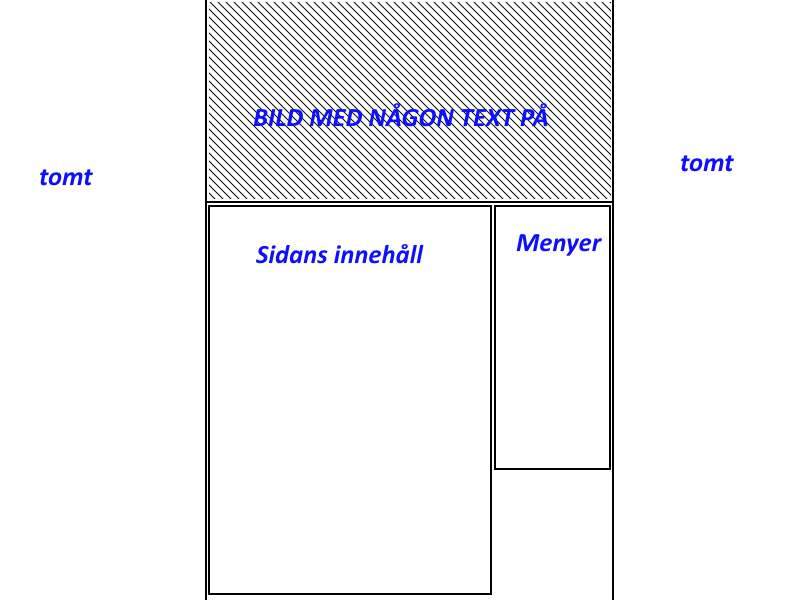
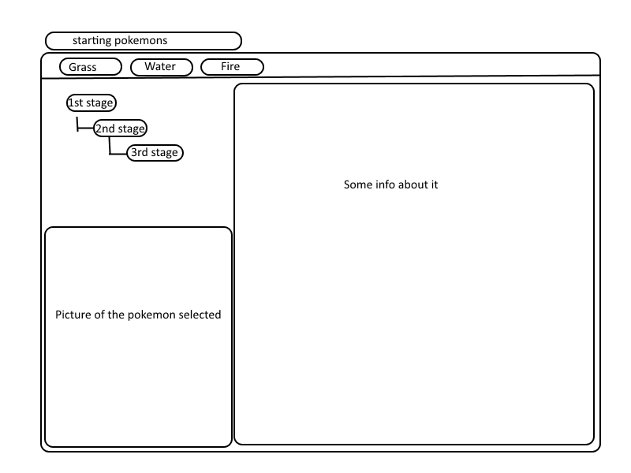

Tänkte något med temat eld, en bild som smälter in i backgrunden.
Centrerad sida med tydliga avramningar. Menyerna på höger sida med
hover effekt.Några font och färgval som passar med temat. Det ska
vara tydligt vad man klickar på, enkelt att se och läsa texten.
Medlemmar
Ludvig Roxin
Jonatan Östling
Cun Luoi Can (sjuk/barn)
Oday Sheaia (sent påhopp)
Micke Ly (hoppade av)
Scrum & Arbetssätt
Vi var bara två personer som var aktiva under en lång stund så det kändes meningslöst att
arbeta efter scrum metoden med en master då det skulle bara varit en i utvecklingsteamet.
Om det varit bättre hade jag gärna arbetat utifrån scrum och jag vill gärna lära mig jobba
så eftersom jag tror att det är ett bra arbetssätt. Vi hade ett trello projekt som var
liknande som det kan vara i ett scrum projekt som bestod av:
Sprint backlog – Validera koden
To do - Det som ska göras men inte är påbörjat
In progress - Det som ska göras och är påbörjat
Testing - Testas så att det fungerar på ett bra sätt
Done – Delar som är klart och när projektet ska vara klart
Designval
Det stog mellan två namn, Site Helpers som jag föreslog eller Code-Ninjas som Jonatan
föreslog och det blev snabbt bestämt att Code-Ninjas var det bättre namnet. Vi var
båda överens om att det var de bättre namnet. Jag har aldrig varit bra på att hitta
på namn och gillade inte heller mitt egna förslag. Tanken bakom namnet var en mix
med Santas Helpers och website.
Färgerna var vi överens om att det skulle vara vit, grå, svart skalor eftersom det
känns mest som ninja färger och det gula blev senare tillagt.
Fonterna bestämde Jonatan att vara Montserrat, sans-serif till menyer, Droid Sans,
sans-serif till brödtext och Verdana till övrigt men det användes aldrig. Båda får
sidan att se simpel och ren ut och den kvaliteten tycker jag alla websidor ska ha.
Code-ninjas loga blev Jonatans design, delvis för att han var först och för att den
är tydlig och har våran sidas namn i sig. Min logga var tänkt att visa vad vi är men
utan namnet i designen och skriva namnet på sidan om det behövdes.
Websidans design är tänkt att vara simpel, tydlig och kunna anpassas till olika skärm
storlekar som mobiler och surfplattor.
en simpel design om pokemon som är lätt att förstå
interaktion med javascript & jquery för att ändra i utseendet.
